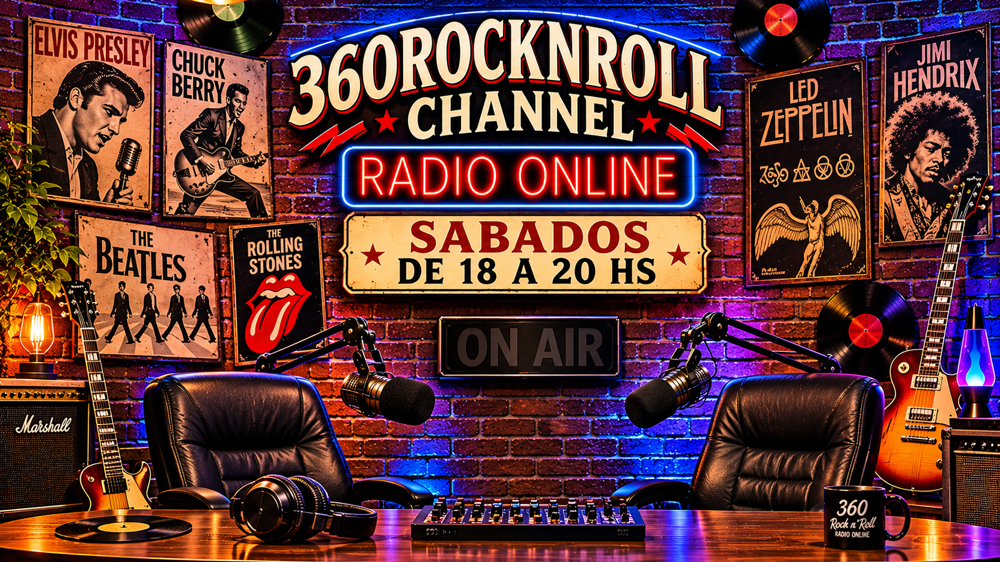

EL ESTUDIO ESTÁ LISTO. NOS ENCONTRAMOS EN LA PRÓXIMA TRANSMISIÓN.
CONECTÁ CON NOSOTROS
ESTAMOS AL AIRE
TRANSMISIÓN EN DIRECTOON AIR
360ROCK
EL ROCK SUENA ACÁ
Cuando estemos transmitiendo, dale play y disfrutá. VER CANAL EN YOUTUBE ↗Si el reproductor no muestra una emisión, visitá nuestro canal de YouTube para ver si estamos transmitiendo.
NUESTRA FRECUENCIA
NO ES SOLO
MÚSICA. ES ACTITUD.
Somos 360Rock n' Roll Radio Online: un espacio para compartir la energía del rock, esos clásicos que nunca pasan de moda y las canciones que merecen sonar más fuerte.
Prendé los parlantes, buscá tu lugar y sé parte de esta comunidad rockera.
SEGUINOS EN YOUTUBE ↗